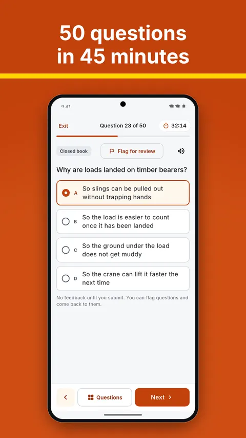

Not a government app. HiVis is an independent study app made by Kodfu Bilisim. It is not affiliated with or endorsed by CITB, CSCS, Pearson VUE or HSE, and it does not contain the real test questions.
Free practice › High-risk work
Plant and site vehicles: free HS&E test practice questions
Keeping people and vehicles apart, reversing, dumpers, telehandlers and plant operator rules.
6 original questions from the HiVis app for the CITB HS&E Operatives test, each with the answer and an explanation. No sign-up, nothing saved. These are not the real test questions: no app or website can show you those.
Question 1 · Choose one answer
What is the main purpose of a site traffic management plan?
- To decide where staff can park their own cars
- To keep vehicles and people apart
- To set the delivery times for suppliers
- To record which drivers hold licences
Show the answer
Answer B: To keep vehicles and people apart
The plan sets out routes, speed limits, crossing points and how pedestrians are separated from vehicles, so people are not struck.
Source: CDM 2015 reg 27 traffic routes
Question 2 · Choose one answer
You need to walk past an excavator that is working. What should you do first?
- Walk past quickly while the machine is facing away from you
- Shout to the operator as you go past the machine
- Get eye contact and wait for a signal that it is safe
- Wave at the cab and keep walking at a normal pace
Show the answer
Answer C: Get eye contact and wait for a signal that it is safe
Operators cannot see everyone. Getting eye contact and a clear signal makes sure they know you are there and have stopped.
Source: HSE HSG144 and site plant safety rules
Question 3 · Choose one answer
At the end of the day a dumper driver offers you a lift across the site, sitting on the mudguard.
What should you do?
- Accept, but hold on tightly to the frame
- Accept if he promises to drive slowly
- Refuse and walk using the pedestrian route
- Sit in the empty skip instead of the mudguard
Show the answer
Answer C: Refuse and walk using the pedestrian route
Passengers must only ride where a proper seat is fitted for them. People thrown from dumpers are often run over or crushed.
Source: PUWER 1998 reg 25 (employees carried)
Question 4 · Choose one answer
Why must the operator check an excavator's quick hitch after changing the bucket?
- If it is not locked, the bucket can fall and crush someone
- So that the bucket digs down to the right depth
- To make the next bucket change quicker and easier
- Because the hitch needs oiling after every change
Show the answer
Answer A: If it is not locked, the bucket can fall and crush someone
A quick hitch that is not fully locked can release the bucket without warning. People have been killed by falling buckets.
Source: HSE guidance on quick hitches for excavators
Question 5 · Choose one answer
Where should a vehicle marshal stand when guiding a reversing vehicle?
- Somewhere safe where the driver can see them
- Directly behind the vehicle in its path
- Up in the cab sitting beside the driver
- Out of sight, using a whistle only
Show the answer
Answer A: Somewhere safe where the driver can see them
A marshal behind the vehicle can be run over, and one out of sight cannot be followed. They must stand clear of the vehicle's path in the driver's view, and the driver stops if they lose sight of them.
Source: HSE HSG144
Question 6 · Choose one answer
What is a common cause of serious injuries to dumper drivers?
- The dumper overturning on a slope or edge
- The engine overheating on a hot day
- The fuel gauge giving a wrong reading
- Driving with the headlights switched on
Show the answer
Answer A: The dumper overturning on a slope or edge
Dumpers overturn when driven across slopes, near edges or with heavy or uneven loads. That is why seat belts with ROPS, stop blocks, safe routes and not overloading the skip matter so much.
Source: HSE guidance on site dumpers
You’ve seen 6 of 19 questions in this topic
The HiVis app has all 19, each with an explanation. Across the whole Operatives there are 389 questions in 19 topics, plus timed 50-question mock tests of 45 minutes.
3 of them are free in the app, the rest come with Pro. HiVis Pro is £5.99 one-off: every question and every mock test for all test levels. No subscription.
Android now; iPhone version not yet available.
Revision notes
Traffic management
Every site should have a traffic management plan that sets out vehicle routes, entrances, one-way systems, speed limits, loading and turning areas, and how pedestrians are kept apart from vehicles. The best control is physical separation, such as fenced walkways and barriers, with clearly marked crossing points where people and vehicles must meet. Routes need to be well lit, kept in good repair and kept clear.
Reversing
Many deaths involving site vehicles happen while they are reversing. The best answer is to design the site so reversing is not needed, using one-way systems and turning areas. Where reversing cannot be avoided, a trained vehicle marshal (banksman) should guide the driver from a safe position where the driver can see them. Cameras, sensors and reversing alarms help, but they do not replace a safe system.
Blind spots and being seen
Drivers of large plant have big blind spots, especially behind and close to the machine. If you cannot see the driver's face, or their eyes in a mirror, assume they cannot see you. Before approaching any plant, stop, make eye contact and wait for the operator to signal that it is safe. Keep out of the slewing area of excavators and never walk behind a reversing vehicle.
Operators and passengers
Only trained, competent operators who have been authorised by their employer may drive site plant. They should carry out daily checks before use and report defects. Where a roll-over protective structure (ROPS) is fitted, the seat belt must be worn. Passengers may only ride where a proper seat is fitted for them. Plant must only be used for the job it was designed for: buckets and forks are never for lifting people.
Dumpers
Overturning and collisions cause many dumper deaths and injuries. Drivers must wear the seat belt where ROPS is fitted, never overload the skip, keep to safe routes and slopes, and use stop blocks when tipping near edges. Forward-tipping dumpers can block the driver's view when loaded. When parked, the dumper should be on level ground with the skip lowered, the engine off and the key removed.
Excavators and telehandlers
Keep out of the area an excavator's arm and counterweight can swing into, as people are crushed between the machine and nearby objects. After changing a bucket, the operator must check the quick hitch is properly locked, because a bucket that drops off can kill. Telehandlers only lift people when fitted with a working platform designed for that purpose. Never stand under raised forks or a raised load.
More topics
- Previous: Lifting operationsPlanned lifts, slingers and signallers, lifting accessories, thorough examinations and exclusion zones.
- Next: EnvironmentWaste, spills and pollution, nuisance noise and dust, wildlife and saving energy and water.
- HS&E test guideFormat, pass mark, booking, ID and how to prepare
Practise every test in the HiVis app
841 original questions for the Operatives, Supervisory, Managers and Professionals and specialist HS&E tests, full timed mock tests of 50 questions in 45 minutes, simple explanations with read aloud, a study plan and spaced review. It works offline, with no ads and no account.



Free: three topics in full, three questions in every other topic, one full mock test for each test, the Card Finder and Site words.
HiVis Pro, £5.99 one-off: every question and every mock test for all test levels. No subscription.
Android now; iPhone version not yet available. HiVis helps you prepare; it cannot promise a pass.